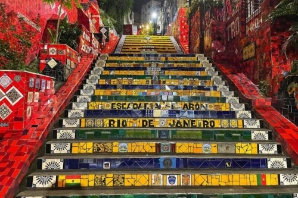

Cristo Redentor
Vista panorâmica do Corcovado e da cidade

Pôr do sol orla
Cenário icônico no Arpoador, Ipanema e Leblon

Escadaria Selarón
Expressão artística do bairro da Lapa / Santa Teresa

Pão de Açúcar
Teleférico e vista para a Baía de Guanabara